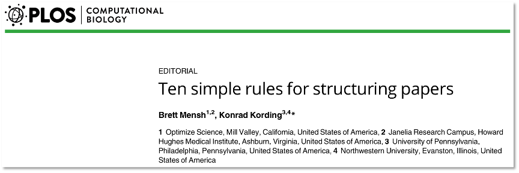
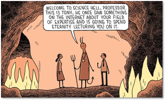
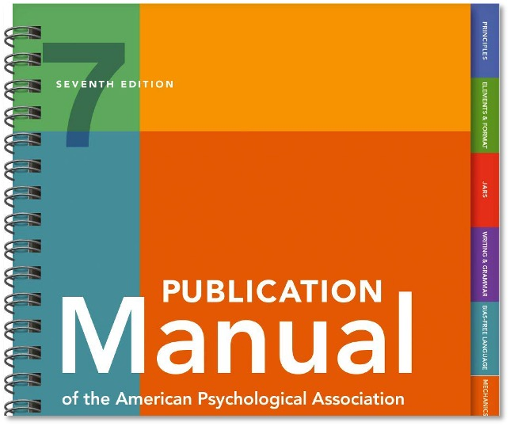

Scientific Writing#
In this session, we will cover:
-
APA style
Figures and Tables
References
Contents#
1. Focus your paper on a central contribution
Make your claim as simple as your data and experimental logic allow
Clearly communicate your contribution in the **title of your paper **
Titles should be short (10-15 words), avoid abbreviations/jargon, no question marks
Formulate your title early on during (or even before) writing– as a reminder to yourself of the contribution you want to make and communicate
Example:
Scene-selective brain regions respond to embedded objects of a scene (Aminoff & Durham, 2022)
2. Write for readers who don’t know your work

Write for a naïve reader (a psychologist who is not from the specific field your project is located in)
Define specific/technical terms, avoid abbreviations and acronyms (unless common, such as RT or ms)
Make your reader care about your work (why is it important?)
3. The context-content-conclusion scheme
Each good story consists of three parts:
Beginning: Set up the context (problem) for the story → No context: “Why was I told that?”
Body: Provide the content of the story → No content: “Why should I believe that?”
Ending: Problem finds its conclusion → No conclusion: “So what?”
Paper level: Introduction (context), methods & results (content), discussion (conclusion)
Paragraph level: First sentence defines the topic, body provides (novel) content, last sentence provides a conclusion
The C-C-C scheme also follows a broad-narrow-broad structure (the “hour-glass structure”)
4. Have a clear, logical flow of arguments
Avoid zig-zag:
Each subject should be covered only in one place
Related sentences or paragraphs should be strung together
Arguments should not be interrupted by unrelated material (“zig-zag”)
Use parallelism:
Parallel messages should be communicated with parallel form (same syntax, same terms for same concepts)
Sounding repetitive is better than confusing people
This is especially important when using abbreviations (e.g., for conditions):
Bad: “CON stimuli lead to slower responses whereas inconsistent stimuli had lower RTs.”
Good: “Participants responded faster to consistent compared to inconsistent stimuli.”
5. Tell a complete story in the abstract
For most readers, the abstract is the only part of a paper they will ever read!
Once again, the Context-Content-Conclusion rule (and hourglass structure) applies:
Context:
Introduce the broader field (1-2 sentences)
Narrow down the context to the specific open question you want to answer (the “gap”; 1-2)
Justify why this question matters (relate back to broader context you started with; 1-2)
Content:
Summarize the method/experimental logic you used to answer your question (“Here we…”; 1-2)
Present the key results (2-3)
Conclusion:
Interpret the results and answer the question you posed in the beginning (1-3)
Show the consequences of your findings (with respect to theories, future studies, etc.; 1-2)
The Abstract should consist of 200-250 words!
6. Introduction: Say why your paper matters
Identify the gap in knowledge you seek to fill and highlight why it is important
Introduce the general topic/field (short) – Why is it important?
Summarize current knowledge of the field (findings, theories, models) – What is your study based on?
Establish gap in current knowledge – What is still unclear?
Describe your project – What is the question/goal of your study?
Summarize your design, key results and conclusion – How is your project “filling the gap”?
Underline your arguments with relevant citations, but only cite articles that are directly related to your work!
Follow the hourglass principle: broad to narrow (or general to specific)!
7. Method: Provide enough detail for a replication
After reading the method section, readers should be able to…
Judge whether your experiment is suited to answer your question
Repeat your experiment
Method section usually has its own subsections:
Participants: Who participated in your study (summary of demographic data)
Materials: Stimuli that participants perceived, devices/software used to display stimuli and collect responses, etc.
Procedure: What happened when (order of events), participants’ task, trial structure
Design: Description of experimental factors/manipulations → Can also be part of the procedure if design is simple
Analysis: Description of specific analysis strategies → Not needed for common analyses
Important: Assignment to experimental conditions (random?), between- or within-subjects design, counterbalancing of participants and/or stimuli, etc.
8. Results: Series of evidence supporting your claim
(Mentally) structure your results in subsections:
Which statistical analysis is testing what aspect of your question(s)?
Introduce the question each paragraph answers: “We next tested whether…”, “After showing […], we next tested…”, “To ensure that there are no artifacts…”, etc.
If necessary, summarize your method/analysis strategy again (e.g., unusual designs or category names/abbreviations)
If possible, give an answer to each question at the end of the paragraph: “We thus conclude that there are no artifacts of…”
Summarize both descriptive and test results, and relate them to your hypotheses!
“In line with the context hypothesis, we found…” or “…were faster which supports the notion of…”
9. Discussion: Was the gap filled?
Start by repeating the main question of your work, the key findings and whether they support your hypotheses
Highlight the main contributions of your work to the gap: Relate your findings to previous findings, theories, models, etc.
Discuss potential differences between your findings and others as well as unexpected results and provide reasons for these differences (you can speculate here)
Discuss limitations of your work, remaining open questions and implications for future studies
Show how your work advances the field, draw a summarizing conclusion (take-home message)
Follow the hourglass structure (specific to general) in the discussion
10. Test your paper on naïve readers
Rule |
Sign of violation |
|---|---|
1. Focus on a central contribution |
Readers cannot give a 1-sentence summary |
2. Write for naïve readers |
Readers do not “get” the paper |
3. Use context-content-conclusion scheme |
Readers ask why something matters |
4. Have a clear, logical flow of arguments |
Readers stumble on small section of text |
5. Tell a complete story in the abstract |
Readers cannot give an “elevator pitch” of your work after reading the abstract |
6. Introduction: Say why your paper matters |
Readers show little interest in the paper |
7. Method: Provide enough detail for a replication |
Readers can’t recreate your experiment |
8. Results: Series of evidence supporting your claim |
Readers do not agree with your conclusion |
9. Discussion: Was the gap filled? |
Readers are left with unanswered criticisms and/or questions on their mind |
Language#

Scientific language
No colloquial language (e.g., colloquial expressions, abbreviations)
Bad: We don’t think there is much of an effect, the test scores were pretty much the same.
Good: We conclude that object size does not affect categorization speed as test scores were not significantly correlated with object size.Write from your perspective (“We” or “I”) and use active voice if possible Bad: Stimuli were manipulated to contain only low-level information. Good: We manipulated stimuli to contain only low-level information.
Use verb tense consistently
Simple past for what you or others did: We conducted an ANOVA… Kim (2015) showed…
Simple present for conclusions and generalizations: We conclude that font size affects reading speed.
Your language should be precise and clear
Use clear, precise and objective language
Bad: Response times were roughly equal.
Good: Response times did not differ significantly, t(48) = 1.04, p = .304.Explicitly name variables you are assessing or comparing
Bad: We found no effect of working memory load.
Good: We found no effect of working memory load on response times.
Bad: Response times were shorter in the low-load condition.
Good: Response times were shorter in the low-load compared to the high-load condition.
Use consistent terminology for conditions, abbreviations, etc. in the text, table and figures!
Simple is (usually) better!
Use simple language – no need to sound smart!
Avoid overly long sentences – try to break them up into shorter sentences
Worst case you can use a numbered list: “We show that (1) scene categorization is…, (2)…, (3)…”
Guide your reader through your text
While writing, consider not only the message you want to convey, but also the information your reader needs to understand it
There should be a clear roter Faden in your work, arguments should build on each other
Certain key words make it easier to follow your train of thoughts:
Here we… to identify your question, method, etc. and distinguish it from previous work
We found… to identify your results
We conclude/Our results indicate… to identify your conclusions and interpretations of the data
We suggest/assume… to identify suggestions (for theories, models or future work) or speculation
Connect thoughts with words like however, similarly, surprisingly, in contrast, etc.
Form#
First of all: Always follow “APA style”! You find a short overview here.
 American Psychological Association (2020). Publication Manual of the American Psychological Association. 7th Edition, American Psychological Association.Purpose of APA style
Standardized writing conventions for
The structure of empirical reports
Referencing other published works
Creation of Figures and Tables
Create a form that makes information easily accessible
All psychological articles should follow same guidelines and structure
Reports should be objective, precise and brief, no “colourful” or colloquial language
APA: Structure of your manuscript
Title page
Title, author name(s), contact information, keywords
Abstract
Introduction
Method
Participants, Materials, Procedure, (Design, Analysis)
Results
Discussion
References
Appendix For your final reports: + signed Eigenständigkeitserklärung
APA: Layout
For your reports: Times New Roman, size 12, double-spaced, left-aligned (no hyphens/manual breaks in words at end of line)
Indent first line of each paragraph using the TAB key on your keyboard
Differentiate levels of heading (note that font size is the same as the text!):
The introduction has no heading; instead repeat the paper title as the heading
Page header: Contains page number and running head (short title)
Title page: In addition to APA style, provide your email and student ID number
Tip
Have a look at the APA student sample paper and Word template
APA: Reporting test results
Use italics for letters used as statistical symbols: t test, p value, _R_², etc.
But not for Greek letters: α, β, Χ², etc.
Report exact p values (e.g., p = .019) unless p < .001; no leading zero!
Use reasonable number of decimals: 147 ms, mean rating 6.51, p = .041
Include test statistic, degrees of freedom, value, p value, effect size
t test: t(52) = 4.8, p < .001
ANOVA: F(2,34) = 2.51, p = .003, η² = .04
Correlation: r(357) = .42, p < .001
Regression coefficient: b = -.34, t(225) = 6.53, p < .001
Narrative form: “A one-way ANOVA showed that noise had a significant effect on test scores, F(3,27) = 5.94, p = .007, η² = .17. Participants in the low noise condition yielded higher scores (M = 23.6, SD = 3.1) compared to the medium noise…”
Tip
More info on Numbers and Statistics.
#
Acknowledgments
This section was contributed by Sandro Wiesmann.